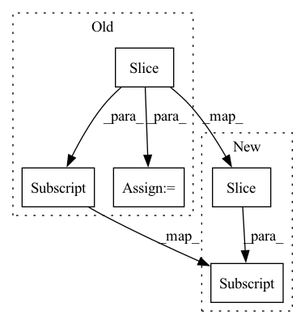

Pattern ID :9215
Before Change
// Position embedding
// lengths: [4, 2, 5]
// position: [[4, 3, 2, 1, 0], [2, 1, 0, 0, 0], [5, 4, 3, 2, 1]]
position = self.len_range[:seq_len] .unsqueeze(0).repeat(batch_size, 1)
position = (lengths[:, None] - position) * valid_his.long()
pos_vectors = self.p_embeddings(position)
his_vectors = his_vectors + pos_vectorsAfter Change
// Position embedding
// lengths: [4, 2, 5]
// position: [[4, 3, 2, 1, 0], [2, 1, 0, 0, 0], [5, 4, 3, 2, 1]]
position = (lengths[:, None] - self.len_range[None, :seq_len] ) * valid_his
pos_vectors = self.p_embeddings(position)
his_vectors = his_vectors + pos_vectors
In pattern: SUPERPATTERN
Frequency: 4
Non-data size: 5
Instances Fragment ID: 33305724
Project Name: thuwangcy/rechorus
Commit Name: dba1d0bd7b6d7296ed6c730793e0f61278007dc2
Time: 2020-11-08
Author: THUwangcy@gmail.com
File Name: src/models/sequential/SASRec.py
M Class Name: SASRec
N Class Name: SASRec
M Method Name: forward(2)
N Method Name: forward(2)
M Parent Class: GRU4Rec
N Parent Class: GRU4Rec
M File Name: src/models/sequential/SASRec.py
N File Name: src/models/sequential/SASRec.py
M Start Line: 41
M End Line: 72
N Start Line: 41
N End Line: 66
Before Change
else:
markup += entity
offset = end
markup += escape_html(text[offset:] )
markup = TPL_ENTS.format(content=markup, dir=self.direction)
if title:
markup = TPL_TITLE.format(title=title) + markupAfter Change
else:
markup += entity
offset = end
fragments = text[offset:] .split("\n")
for i, fragment in enumerate(fragments):
markup += escape_html(fragment)
if len(fragments) > 1 and i != len(fragments) - 1: Fragment ID: 33305708
Project Name: explosion/spaCy
Commit Name: 90b958fd0100f2528e080d3b803d1d6c60a08ef2
Time: 2020-07-29
Author: gustavo.leyendecker@gmail.com
File Name: spacy/displacy/render.py
M Class Name: EntityRenderer
N Class Name: EntityRenderer
M Method Name: render_ents(4)
N Method Name: render_ents(4)
M Parent Class: object
N Parent Class: object
M File Name: spacy/displacy/render.py
N File Name: spacy/displacy/render.py
M Start Line: 310
M End Line: 331
N Start Line: 310
N End Line: 336
Before Change
// ww = 30, hh = 30, cc = 192, num_patches = 14, valid_ww = 28, overlap_s = 1
center = tf.reshape(pad_inputs[:, :valid_ww, :valid_ww, :], temp_shape) // (1, 14, 2, 14, 2, 192)
ww_overlap = tf.reshape(pad_inputs[:, :valid_ww, overlap_s:valid_ww + overlap_s, :] , temp_shape) // (1, 14, 2, 14, 2, 192)
hh_overlap = tf.reshape(pad_inputs[:, overlap_s:valid_ww + overlap_s, :valid_ww, :], temp_shape) // (1, 14, 2, 14, 2, 192)
corner_overlap = tf.reshape(pad_inputs[:, overlap_s:valid_ww + overlap_s, overlap_s:valid_ww + overlap_s, :], temp_shape) // (1, 14, 2, 14, 2, 192)
// print(f"{center.shape = }, {corner_overlap.shape = }")After Change
// print(f"{ww = }, {hh = }, {cc = }, {num_patches_hh = }, {num_patches_ww = }, {valid_hh = }, {valid_ww = }, {overlap_s = }")
// ww = 30, hh = 66, cc = 192, num_patches_hh = 32, num_patches_ww = 14, valid_hh = 64, valid_ww = 28, overlap_s = 1
center = tf.reshape(pad_inputs[:, :valid_hh, :valid_ww, :] , temp_shape) // (1, 32, 2, 14, 2, 192)
ww_overlap = tf.reshape(pad_inputs[:, :valid_hh, overlap_s:valid_ww + overlap_s, :], temp_shape) // (1, 32, 2, 14, 2, 192)
hh_overlap = tf.reshape(pad_inputs[:, overlap_s:valid_hh + overlap_s, :valid_ww, :], temp_shape) // (1, 32, 2, 14, 2, 192)
corner_overlap = tf.reshape(pad_inputs[:, overlap_s:valid_hh + overlap_s, overlap_s:valid_ww + overlap_s, :], temp_shape) // (1, 32, 2, 14, 2, 192) Fragment ID: 33305709
Project Name: leondgarse/keras_cv_attention_models
Commit Name: c945694eeaf340f96627ec0155b9b26ddad5d30c
Time: 2021-10-08
Author: leondgarse@gmail.com
File Name: keras_cv_attention_models/common_layers.py
M Class Name: AnonimousClass
N Class Name: AnonimousClass
M Method Name: tpu_extract_patches_overlap_1(6)
N Method Name: tpu_extract_patches_overlap_1(6)
M Parent Class:
N Parent Class:
M File Name: keras_cv_attention_models/common_layers.py
N File Name: keras_cv_attention_models/common_layers.py
M Start Line: 180
M End Line: 214
N Start Line: 183
N End Line: 217
Before Change
decode_lengths = torch.LongTensor([len(batch[1]) for batch in batches])
encoder_cont = rnn.pad_sequence(
[torch.Tensor(batch[0]["x_cont"][:length] ) for length, batch in zip(encode_lengths, batches)],
batch_first=True,
)
encoder_cat = rnn.pad_sequence(
[torch.LongTensor(batch[0]["x_cat"][:length]) for length, batch in zip(encode_lengths, batches)],
batch_first=True,
)
decoder_cont = rnn.pad_sequence(
[torch.Tensor(batch[0]["x_cont"][length:]) for length, batch in zip(encode_lengths, batches)],
batch_first=True,
)
decoder_cat = rnn.pad_sequence(
[torch.LongTensor(batch[0]["x_cat"][length:]) for length, batch in zip(encode_lengths, batches)],
batch_first=True,
)
target = rnn.pad_sequence([torch.Tensor(batch[1]) for batch in batches], batch_first=True)
x_cat = torch.cat((encoder_cat, decoder_cat), dim=1)
x_cont = torch.cat((encoder_cont, decoder_cont), dim=1)
return (
dict(x_cat=x_cat, x_cont=x_cont, encode_lengths=encode_lengths, decode_lengths=decode_lengths),
target,After Change
decoder_lengths = torch.tensor([len(batch[1]) for batch in batches], dtype=torch.long)
encoder_cont = rnn.pad_sequence(
[batch[0]["x_cont"][:length] for length, batch in zip(encoder_lengths, batches)], batch_first=True
)
encoder_cat = rnn.pad_sequence(
[batch[0]["x_cat"][:length] for length, batch in zip(encoder_lengths, batches)], batch_first=True Fragment ID: 33305711
Project Name: jdb78/pytorch-forecasting
Commit Name: bfd5feb8183d9ece59c1fd40054ef1ef7b8e789c
Time: 2020-07-14
Author: beitner.jan@bcg.com
File Name: pytorch_forecasting/data.py
M Class Name: TimeSeriesDataSet
N Class Name: TimeSeriesDataSet
M Method Name: _collate_fn(2)
N Method Name: _collate_fn(2)
M Parent Class: Dataset
N Parent Class: Dataset
M File Name: pytorch_forecasting/data.py
N File Name: pytorch_forecasting/data.py
M Start Line: 377
M End Line: 400
N Start Line: 392
N End Line: 419